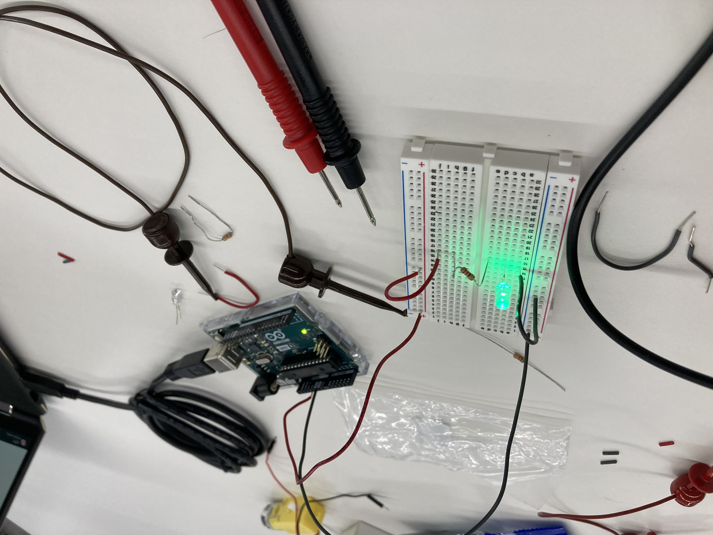

<br>
# Week 2: Microcontroller Programming
## In-class assignment:

The above diagram shows a simple circuit, consisting of a 1K ohm resister, LED bulb, and an Arduino.
## Assignment
This is a simple kinetic sculpture made using a wire and some lazer-cut cardboard pieces. Here are the pieces needed to be cut.
<img src="banana.png" alt="led setup" width="400">
<img src="toppiece.png" alt="led setup" width="400">
<img src="bottompiece.png" alt="led setup" width="400">
Return home: [link](../index.html).